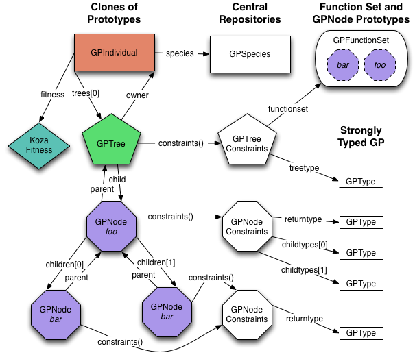

| ECJ |
In the fourth tutorial, we will use Koza-style GP to evolve solutions to a simple multivalued symbolic regression problem. This will walk through many of the complexities of evolving s-expression trees. We will also learn how to print out trees in a variety of formats, including ones readable by LaTeX. We'll also add a dash of elitism to the traditional Koza breeding mix.
Go into the ec/app directory and create a directory called tutorial4.
[This sections assumes you are familiar with Koza-style genetic programming]
 ECJ implements genetic programming individuals as forests of trees. Each tree is implemented as a tree of GPNodes. A GPIndividual is a subclass of Individual which holds an array of GPTrees. In most GP problems, the GPIndividual uses KozaFitness, a Fitness subclass which implements Koza's raw and standardized fitness and hits measure.
A GPTree contains a pointer to the root GPNode of its tree. GPNodes contain an array of pointers to their children in the tree. At present, all GPNodes contain this array, even the terminals, for whom the array is of zero length. For convenience, GPNodes also maintain a pointer to their parent in the tree (always a GPNode, except the root's parent, which is the owning GPTree) and an integer indicating which number child they are of their parent (their argposition).
The species of GPIndividuals is GPSpecies. Just as Individuals have a many-to-one relationship with Species in order to provide a global storage area, GPTrees and GPNodes also have many-to-one relationships with GPTreeConstraints and GPNodeConstraints objects. At present the primary function of these "constraints" objects is to specify the arity of the respective GPNodes, and to specify the GPTypes associated with the GPNodes and GPTrees.
ECJ supports atomic and set-based strong typing in order to place constraints on where various GPNodes may appear in the tree. Atomic strong typing assigns an atomic symbol to each return value and argument slot of a GPNode, and to the return value of the GPTree. GPNodes are permitted to be children of other GPNode if the return value type symbol of the child GPNode matches the relevant argument slot type symbol of the parent. Similarly, a GPNode is permitted to be the root if its return value type symbol matches the return value type symbol of the GPTree. Atomic types are defined with a subclass of GPType called GPAtomicType.
Set-based strong typing extends the notion of matching. Types are no longer just atomic symbols can also be sets of atomic symbols. A set matches with another set if their intersection is nonempty. A set matches with an atomic symbol if the atomic symbol is found in the set. Set types are defined with a subclass of GPType called GPSetType. Set-based strong typing is sufficient for a wide variety of needs, including type inheritance (subclassing) and certain forms of general types. Set-based typing is not full polymorphic typing: for example, it assumes that the number of types is finite, so ECJ's typing facility is not appropriate for matrix multiplication operators, etc.
While ECJ supports strong typing, in fact most GP applications only need a single type (they are "typeless"). For convenience, ECJ's default parameter files for GP define a single type called (for want of a better name) nil, and some default GPNodeConstraints of various arities which only use the type nil
Each GPTree subscribes to a GPFunctionSet which defines the GPNodes legally permitted in the tree. GPFunctionSets store, in a variety of redundant tables, the relevant GPNodes stored inside GPFuncInfo objects. GPFuncInfo's existence is historical oddity -- the GPFunctionSet could have just stored the GPNodes directly. When an algorithm needs to generate a tree, it does so by finding the appropriate GPFunctionSet choosing GPNodes from the set, and cloning them to produce nodes to hang in the tree.
GP builds trees using tree generation algorithms, all of which are subclasses of GPNodeBuilder. Tree generation algorithms are usually used in one of two places: population initialization and mutation. Mutation algorithms have their own parameters where you can specify the GPNodeBuilder subclass you'd like. Additionally, each GPTree has a reference (not shown on the graph) to a GPNodeBuilder resonsible for initialization of that tree.
ECJ's GP package has its own special GPInitializer subclass of Initializer. The reason for this is that GP needs some location to set up the GPFunctionSets, GPTreeConstraints, and GPNodeConstraints before evolution begins. Initializer is the most obvious location. The ec.gp.koza package adds the Koza-specific features to the general notion of tree-based genetic programming.
Whew!
What we will do is use GPTrees to evolve s-expression parse trees representing two-variable equations. Our function set will contain five GPNodes representing the functions add (+), sub (-), mul (*), X, and Y. The objective is to evolve an equation most closing a set of <X,Y,f(X,Y)> data.
We begin by defining a GPData object. This object will be passed from GPNodes to their children, and usually more importantly, from the children back to the parents (storing the child node's return value after the child is evaluated). It provides a general mechanism for nodes to transfer information to one another.
In our case, we're interested only in the return values of GPNodes, and those values are doubles. So we'll make a GPData object which consists solely of a double. Create a file called DoubleData.java. In this file add:
package ec.app.tutorial4;
import ec.util.*;
import ec.*;
import ec.gp.*;
public class DoubleData extends GPData
{
public double x; // return value
public GPData copyTo(final GPData gpd) // copy my stuff to another DoubleData
{ ((DoubleData)gpd).x = x; return gpd; }
}
Add. Create a file called Add.java. In this file add:
package ec.app.tutorial4;
import ec.*;
import ec.gp.*;
import ec.util.*;
public class Add extends GPNode
{
public String toString() { return "+"; }
public void checkConstraints(final EvolutionState state,
final int tree,
final GPIndividual typicalIndividual,
final Parameter individualBase)
{
super.checkConstraints(state,tree,typicalIndividual,individualBase);
if (children.length!=2)
state.output.error("Incorrect number of children for node " +
toStringForError() + " at " +
individualBase);
}
Add needs to specify its printed form ("+"), and a function (checkConstraints(...) ) which give Add a chance to do a sanity check when first loaded. This is usually used to verify that the child array size is correct.
Next we will define the central function to the GPNode: the eval method, which is called when the GPNode must do its part during the execution of the tree as s-expression computer code. eval is called by the GPNode's parent to execute the GPNode and get its return value.
The eval method is passed a bunch of stuff, including the EvolutionState, the current thread number (so you can get a random number via state.random[thread], an ADFStack (don't worry about this -- just pass it on to your children), the GPIndividual which is executing, the Problem which is executing the GPIndividual, and the GPData used to pass information to and from the GPNode's parent.
Here we go:
public void eval(final EvolutionState state,
final int thread,
final GPData input,
final ADFStack stack,
final GPIndividual individual,
final Problem problem)
{
double result;
DoubleData rd = ((DoubleData)(input));
children[0].eval(state,thread,input,stack,individual,problem);
result = rd.x;
children[1].eval(state,thread,input,stack,individual,problem);
rd.x = result + rd.x;
}
}
What we're doing here is simple enough: we evaluate our left child, then we evaluate our right child, then we add the two together and return that result. Note that we reuse the GPData object rather than allocating new ones. You are free to allocate a new GPData object to pass to your children, but you should use the GPData object provided you when you return a value to your parent. But I suggest you reuse the GPData object to keep from allocating millions of objects during evaluation.
Sub and Mul. These functions are set up nearly identically. Create a file called Sub.java and add to it the following:
package ec.app.tutorial4;
import ec.*;
import ec.gp.*;
import ec.util.*;
public class Sub extends GPNode
{
public String toString() { return "-"; }
public void checkConstraints(final EvolutionState state,
final int tree,
final GPIndividual typicalIndividual,
final Parameter individualBase)
{
super.checkConstraints(state,tree,typicalIndividual,individualBase);
if (children.length!=2)
state.output.error("Incorrect number of children for node " +
toStringForError() + " at " +
individualBase);
}
public void eval(final EvolutionState state,
final int thread,
final GPData input,
final ADFStack stack,
final GPIndividual individual,
final Problem problem)
{
double result;
DoubleData rd = ((DoubleData)(input));
children[0].eval(state,thread,input,stack,individual,problem);
result = rd.x;
children[1].eval(state,thread,input,stack,individual,problem);
rd.x = result - rd.x;
}
}
Similarly, create a file called Mul.java, and add to it:
package ec.app.tutorial4;
import ec.*;
import ec.gp.*;
import ec.util.*;
public class Mul extends GPNode
{
public String toString() { return "*"; }
public void checkConstraints(final EvolutionState state,
final int tree,
final GPIndividual typicalIndividual,
final Parameter individualBase)
{
super.checkConstraints(state,tree,typicalIndividual,individualBase);
if (children.length!=2)
state.output.error("Incorrect number of children for node " +
toStringForError() + " at " +
individualBase);
}
public void eval(final EvolutionState state,
final int thread,
final GPData input,
final ADFStack stack,
final GPIndividual individual,
final Problem problem)
{
double result;
DoubleData rd = ((DoubleData)(input));
children[0].eval(state,thread,input,stack,individual,problem);
result = rd.x;
children[1].eval(state,thread,input,stack,individual,problem);
rd.x = result * rd.x;
}
}
X and Y. So far we have defined nonterminals (nonleaf nodes in the tree), all of which have arity 2. Now we'll finish by defining two terminals (leaf nodes in the tree) which of course have arity 0 (no children). Before a tree is evaluated, the X and Y values will be set, then as the tree is evaluated, the X and Y terminals will simply return these values when they are evaluated. We begin by creating a file called X.java and adding to it:
package ec.app.tutorial4;
import ec.*;
import ec.gp.*;
import ec.util.*;
public class X extends GPNode
{
public String toString() { return "x"; }
public void checkConstraints(final EvolutionState state,
final int tree,
final GPIndividual typicalIndividual,
final Parameter individualBase)
{
super.checkConstraints(state,tree,typicalIndividual,individualBase);
if (children.length!=0)
state.output.error("Incorrect number of children for node " +
toStringForError() + " at " +
individualBase);
}
Note that there are no children. Now what we'll do is define in our Problem two public doubles called currentX and currentY. These are the values that these nodes return when evaluated. Hence we add:
public void eval(final EvolutionState state,
final int thread,
final GPData input,
final ADFStack stack,
final GPIndividual individual,
final Problem problem)
{
DoubleData rd = ((DoubleData)(input));
rd.x = ((MultiValuedRegression)problem).currentX;
}
}
The Y class is created similarly. Make a file called "Y.java", and add to it:
package ec.app.tutorial4;
import ec.*;
import ec.gp.*;
import ec.util.*;
public class Y extends GPNode
{
public String toString() { return "y"; }
public void checkConstraints(final EvolutionState state,
final int tree,
final GPIndividual typicalIndividual,
final Parameter individualBase)
{
super.checkConstraints(state,tree,typicalIndividual,individualBase);
if (children.length!=0)
state.output.error("Incorrect number of children for node " +
toStringForError() + " at " +
individualBase);
}
public void eval(final EvolutionState state,
final int thread,
final GPData input,
final ADFStack stack,
final GPIndividual individual,
final Problem problem)
{
DoubleData rd = ((DoubleData)(input));
rd.x = ((MultiValuedRegression)problem).currentY;
}
}
Create a file called "MultiValuedRegression.java". In it add the following:
package ec.app.tutorial4;
import ec.util.*;
import ec.*;
import ec.gp.*;
import ec.gp.koza.*;
import ec.simple.*;
public class MultiValuedRegression extends GPProblem implements SimpleProblemForm
{
public static final String P_DATA = "data";
public double currentX;
public double currentY;
public DoubleData input;
public Object clone()
{
MultiValuedRegression newobj = (MultiValuedRegression) (super.clone());
newobj.input = (DoubleData)(input.clone());
return newobj;
}
Here, after three tutorials of discussion, we're finally implementing the clone method. We override this method because to clone the MultiValuedRegression class, we must also clone the input variable (it's an object -- DoubleData, so it's not copied in a light clone which is the default for clone()). Now we add the setup method.
public void setup(final EvolutionState state,
final Parameter base)
{
// very important, remember this
super.setup(state,base);
// set up our input -- don't want to use the default base, it's unsafe here
input = (DoubleData) state.parameters.getInstanceForParameterEq(
base.push(P_DATA), null, DoubleData.class);
input.setup(state,base.push(P_DATA));
}
Here we're basically using the setup method to load our DoubleData class. We could have hard-coded the object to be a DoubleData, but that wouldn't be ECJ style. Instead we load it from the parameter database. This also allows the user to change the class in case that's useful to him.
Last we need to define the evaluate method, which actually evaluates the individual and sets its fitness. We will do so by testing the individual against ten data points, then setting its fitness to the sum of how close it got in each case. Thus 0 is the ideal fitness -- in GP, 0 is the ideal and infinity is worse than the worst possible fitness. The hit measure (an auxillary measure) is simply how often the system got "reasonably close".
public void evaluate(final EvolutionState state,
final Individual ind,
final int subpopulation,
final int threadnum)
{
if (!ind.evaluated) // don't bother reevaluating
{
int hits = 0;
double sum = 0.0;
double expectedResult;
double result;
for (int y=0;y<10;y++)
{
currentX = state.random[threadnum].nextDouble();
currentY = state.random[threadnum].nextDouble();
expectedResult = currentX*currentX*currentY + currentX*currentY + currentY;
((GPIndividual)ind).trees[0].child.eval(
state,threadnum,input,stack,((GPIndividual)ind),this);
result = Math.abs(expectedResult - input.x);
if (result <= 0.01) hits++;
sum += result;
}
// the fitness better be KozaFitness!
KozaFitness f = ((KozaFitness)ind.fitness);
f.setFitness(state,(float)sum);
f.hits = hits;
ind.evaluated = true;
}
}
}
Strongly-typed, multi-tree GP has a lot of parameters. Fortunately ECJ has written nearly all of them for you already, in the ec/gp/koza/koza.params file. Take a minute and peruse through it, and also through the ec/gp/gp.params file which is its parent. You'll see lots of clues there about what kinds of things you can do to bend ECJ's GP system to your will. ECJ differs from Koza-I in very slight modifications of RAMPED-HALF-AND-HALF (ECJ uses lil-gp's approach), the use of 7-tournament selection, and a default population size of 1024.
What we'll need to define in our own parameter file: the function set, the Problem, and the GPData object. Create a file called tutorial4.params, and in it add:
parent.0 = ../../gp/koza/koza.params
# the next four items are already defined in koza.params, but we
# put them here to be clear.
# We have one function set, of class GPFunctionSet
gp.fs.size = 1
gp.fs.0 = ec.gp.GPFunctionSet
# We'll call the function set "f0". It uses the default GPFuncInfo class
gp.fs.0.name = f0
gp.fs.0.info = ec.gp.GPFuncInfo
# We have five functions in the function set. They are:
gp.fs.0.size = 5
gp.fs.0.func.0 = ec.app.tutorial4.X
gp.fs.0.func.0.nc = nc0
gp.fs.0.func.1 = ec.app.tutorial4.Y
gp.fs.0.func.1.nc = nc0
gp.fs.0.func.2 = ec.app.tutorial4.Add
gp.fs.0.func.2.nc = nc2
gp.fs.0.func.3 = ec.app.tutorial4.Sub
gp.fs.0.func.3.nc = nc2
gp.fs.0.func.4 = ec.app.tutorial4.Mul
gp.fs.0.func.4.nc = nc2
The "nc0" and "nc2" are names for GPNodeConstraints objects defined in the koza.params file. nc0 means a GPNodeConstraints object defining nodes with no children and nil as the return type. nc2 means a GPNodeConstraints object defining nodes with two children (each with nil), plus nil as the return type. Continuing, we add to the file information indicating our Problem and GPData choices:
eval.problem = ec.app.tutorial4.MultiValuedRegression
eval.problem.data = ec.app.tutorial4.DoubleData
# The following should almost *always* be the same as eval.problem.data
# For those who are interested, it defines the data object used internally
# inside ADF stack contexts
eval.problem.stack.context.data = ec.app.tutorial4.DoubleData
Save the files and close them. Compile the java files. The run the problem with java ec.Evolve -file tutorial4.params -p stat.gather-full=true (because we'd like to see maximal information, and it's not that expensive to compute).
On most Java VM's ECJ should discover the solution in four generations (it's an easy problem). The out.stat file looks like this:
Generation 0
================
Subpopulation 0
----------------
Avg Nodes: 24.11328125
Nodes/tree: [24.11328125]
Avg Depth: 4.5029296875
Depth/tree: [4.5029296875]
Mean fitness raw: 10.727137 adjusted: 0.12187841 hits: 0.2705078125
Best Individual of Generation:
Evaluated: true
Fitness: Raw=0.73517203 Adjusted=0.5763117 Hits=2
Tree 0:
(* (+ (- (+ (- y x) (+ x x)) (+ (- x y) (*
y y))) (* (+ (* y y) (* y y)) (+ (- y y)
(- y y)))) (+ (+ (+ (+ x y) (* x x)) (* (*
y y) (- x x))) (+ (* (- y y) (+ x y)) (*
(- y y) (* y y)))))
Generation 1
================
Subpopulation 0
----------------
Avg Nodes: 19.060546875
Nodes/tree: [19.060546875]
Avg Depth: 4.416015625
Depth/tree: [4.416015625]
Mean fitness raw: 6.279509 adjusted: 0.18087758 hits: 0.541015625
Best Individual of Generation:
Evaluated: true
Fitness: Raw=0.41414043 Adjusted=0.7071433 Hits=6
Tree 0:
(* (+ (- (+ (- y x) (+ x x)) (+ (- x y) (*
y y))) (* (+ (* y y) (* y y)) (+ (- y y)
(- y y)))) (+ (+ (+ (+ x y) (* x x)) (* (*
y (* x y)) (- x x))) (+ (* (- y y) (+ x y))
(* (- y y) (* y y)))))
Generation 2
================
Subpopulation 0
----------------
Avg Nodes: 18.21484375
Nodes/tree: [18.21484375]
Avg Depth: 4.4716796875
Depth/tree: [4.4716796875]
Mean fitness raw: 5.1355796 adjusted: 0.21912025 hits: 0.6796875
Best Individual of Generation:
Evaluated: true
Fitness: Raw=0.42874238 Adjusted=0.69991624 Hits=5
Tree 0:
(- (+ (- (* (* x x) (+ y y)) (* (- y y) (-
x y))) (* (- (* x x) (+ y x)) (- (* y x)
(+ y x)))) (* (- (- (* y x) (+ y (* x y)))
(+ (* y y) (+ x y))) (* (+ (- x x) (* y x))
(* (- x y) (- y y)))))
Generation 3
================
Subpopulation 0
----------------
Avg Nodes: 22.228515625
Nodes/tree: [22.228515625]
Avg Depth: 4.9208984375
Depth/tree: [4.9208984375]
Mean fitness raw: 4.6831636 adjusted: 0.25266612 hits: 0.8662109375
Best Individual of Generation:
Evaluated: true
Fitness: Raw=0.0 Adjusted=1.0 Hits=10
Tree 0:
(+ y (+ (* x y) (* y (* x x))))
Final Statistics
================
Total Individuals Evaluated: 4096
Best Individual of Run:
Evaluated: true
Fitness: Raw=0.0 Adjusted=1.0 Hits=10
Tree 0:
(+ y (+ (* x y) (* y (* x x))))
Timings
=======
Initialization: 0.312 secs total, 24692 nodes, 79141.02 nodes/sec
Evaluating: 0.221 secs total, 85624 nodes, 387438.9 nodes/sec
Breeding: 0.614 secs total, 60932 nodes, 99237.78 nodes/sec
Memory Usage
==============
Initialization: 1109.9062 KB total, 24692 nodes, 22.246923 nodes/KB
Evaluating: 1.6875 KB total, 85624 nodes, 50740.15 nodes/KB
Breeding: 1782.4219 KB total, 60932 nodes, 34.184948 nodes/KB
Wow, only 34.14948 nodes fit in a KB! That's 30 bytes per node! Compare this to lil-gp, which uses 4 bytes per node, or 17 bytes for an Ephemeral Random Constant. And DGPC uses only 1 byte per node. These are packed array approaches, and compared to them, ECJ is a memory hog. This is partially due to Java, and partially due to ECJ using a tree structure rather than a packed array structure. The upside is that ECJ's trees are far easier to modify and customize than packed arrays of simple numbers.
Since GPNodes absolutely dominate the memory usage, we only bother looking at them. Here's where the memory goes:
If you've been counting, that totals to 34 bytes. HotSpot is clever when dealing with zero-sized arrays, which I believe accounts for the slight lowering in usage. PLUS: to evolve a population, ECJ must keep around the old population to breed into it. That doubles your expected memory (GPSYS, another Java-based GP system, jumps through hoops to avoid this necessity).
The net result of this is that GP runs which work fine in 8MB on lil-gp can require 64MB on ECJ. This was a design decision tradeoff: I decided to run fast and to be highly flexible and powerful rather than be highly compact. Besides...memory is cheap nowadays! :-)
The best individual of the generation now looks like this:
Final Statistics
================
Total Individuals Evaluated: 4096
Best Individual of Run:
Evaluated: true
Fitness: Raw=0.0 Adjusted=1.0 Hits=10
Tree 0:
\begin{bundle}{\gpbox{+}}\chunk{\gpbox{y}}\chunk{\begin{bundle}{\gpbox{+}}\chunk{\begin{bundle}{\gpbox{*}}
\chunk{\gpbox{x}}\chunk{\gpbox{y}}\end{bundle}}\chunk{\begin{bundle}{\gpbox{*}}\chunk{\gpbox{y}}
\chunk{\begin{bundle}{\gpbox{*}}\chunk{\gpbox{x}}\chunk{\gpbox{x}}\end{bundle}}\end{bundle}}\end{bundle}}
\end{bundle}
The chunk in blue can be snipped out and inserted into a LaTeX file with a few extra items as shown:
\documentclass[]{article}
\usepackage{epic} % required by ecltree and fancybox packages
\usepackage{ecltree} % to draw the GP trees
\usepackage{fancybox} % required by \Ovalbox
\begin{document}
% minimum distance between nodes on the same line
\setlength{\GapWidth}{1em}
% draw with a thick dashed line, very nice looking
\thicklines \drawwith{\dottedline{2}}
% draw an oval and center it with the rule. You may want to fool with the
% rule values, though these seem to work quite well for me. If you make the
% rule smaller than the text height, then the GP nodes may not line up with
% each other horizontally quite right, so watch out.
\newcommand{\gpbox}[1]{\Ovalbox{#1\rule[-.7ex]{0ex}{2.7ex}}}
\begin{bundle}{\gpbox{+}}\chunk{\gpbox{y}}\chunk{\begin{bundle}{\gpbox{+}}\chunk{\begin{bundle}{\gpbox{*}}
\chunk{\gpbox{x}}\chunk{\gpbox{y}}\end{bundle}}\chunk{\begin{bundle}{\gpbox{*}}\chunk{\gpbox{y}}
\chunk{\begin{bundle}{\gpbox{*}}\chunk{\gpbox{x}}\chunk{\gpbox{x}}\end{bundle}}\end{bundle}}\end{bundle}}
\end{bundle}
\end{document}
Run latex on this file, and you'll get out a picture like the one shown at right.
(exp (- (sin (+ 4 (cos x))) (* x x)) x)
...would get instead printed as
(sin(4 + cos(x)) - (x * x)) exp x
We prefer a Lisp style, but this might be easier for you to read. To do this, you can run the command like this: java ec.Evolve -file tutorial4.params -p gp.tree.c=true
The results are very similar in this case. Here's the statistics file:
0 377 1137264 99 648 24.11328125 [24.11328125] 24.11328125 4.5029296875 [4.5029296875] 4.5029296875 10.727137 0.12187841 0.2705078125 0.73517203 0.5763117 2 0.73517203 0.5763117 2
1 297 929120 80 360 19.060546875 [19.060546875] 21.5869140625 4.416015625 [4.416015625] 4.45947265625 6.279509 0.18087758 0.541015625 0.41414043 0.7071433 6 0.41414043 0.7071433 6
2 188 901176 36 360 18.21484375 [18.21484375] 20.462890625 4.4716796875 [4.4716796875] 4.463541666666667 5.1355796 0.21912025 0.6796875 0.42874238 0.69991624 5 0.41414043 0.7071433 6
3 273 -783656 40 360 22.228515625 [22.228515625] 20.904296875 4.9208984375 [4.9208984375] 4.577880859375 4.6831636 0.25266612 0.8662109375 0.0 1.0 10 0.0 1.0 10
For information on the specifics of these columns, consult the KozaShortStatistics documentation.
The symbolic regression example here is fairly simple. More sophisticated (but one-variable) versions can be found in the ec.app.regression package. At this point understanding them should be pretty easy.